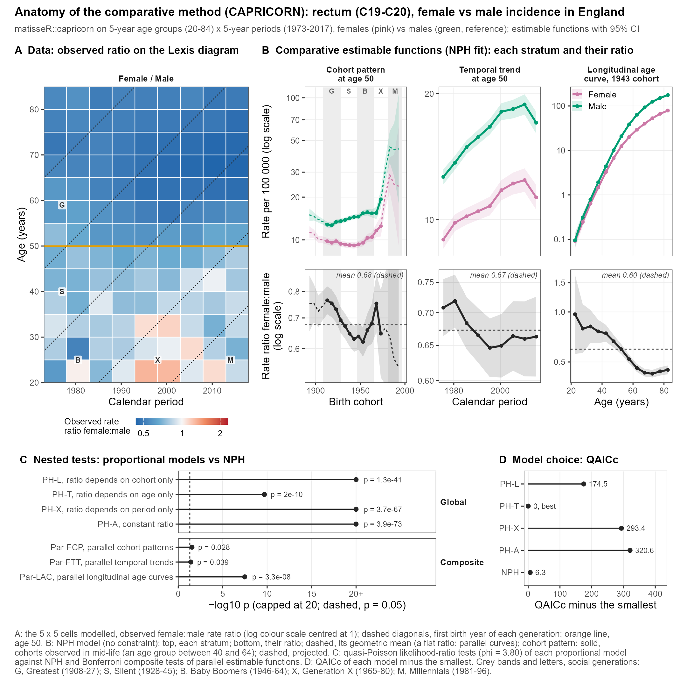

You rarely care about one Lexis diagram alone. You want to compare women and men, two countries, or incidence and mortality. You could fit a separate APC model to each and compare the curves by eye, but that wastes power and has no formal test.
CAPRICORN (comparative APC analysis; Rosenberg and colleagues, BMC Med Res Methodol 2023) fits all groups together and asks a precise question: how are their rates related? Take the ratio of the rates of a target group to a reference group in every cell of the Lexis diagram. Five situations are possible:
Model
The ratio of rates…
Groups differ in…
Rates are parallel along…
PH-A
is constant
their overall level only
the whole Lexis diagram
PH-L
depends on birth cohort only
their cohort pattern
cohorts (diagonals)
PH-T
depends on age only
their age pattern
time, within each age
PH-X
depends on calendar period only
their period trend
cross-sectional age curves
NPH
depends on age, period and cohort
everything
nothing
“PH” stands for proportional: the groups’ rates are proportional in some sense. NPH (non-proportional) is the unrestricted model, equivalent to separate APC fits. Each PH model is NPH with some blocks of coefficients forced equal across groups. A likelihood-ratio test compares each PH model with NPH. A small p-value means the constraint is too strict: that kind of proportionality does not hold. AICc ranks all five models by fit and parsimony.
Why bother? When a proportional model holds, you describe the comparison with one simple pattern, and your estimates are more precise because they borrow strength across groups. When none holds, that is itself a finding: the groups truly differ in several ways.
Hands-on lab35 min
Fit and test the models
The synthetic examples were built so that the answer is known. Examples 1 to 4 are one disease in four populations, and the index says which comparison with population A (example 1) should satisfy which model:
A with a different period trend (vs A: PH-X holds)
3
C
A x 1.3 in a small population, zero cells (vs A: PH-A holds)
4
D
A with a steeper cohort trend (vs A: PH-L holds)
Compare population B (example 2) with A. Give capricorn() a named list of rates objects that share the same Lexis diagram. The last one is the reference.
The global tests compare each proportional model with NPH:
S$tests$global[, .(test, stat =round(stat, 1), df, p =pf(p))]
test
stat
df
p
PHL
39.9
12
<0.0001
PHT
41.0
16
0.0006
PHX
20.4
21
0.4950
PHA
55.6
25
0.0004
Read the p column as the evidence against that model. Here PH-L, PH-T and PH-A are rejected, and PH-X is not. That fits the design: population B differs from A in its period trend, so the ratio depends on period only. AICc agrees:
B vs A (period trend differs): only PH-X is not rejected.
D vs A (steeper cohort trend): only PH-L is not rejected.
C vs A (rates 1.3 times those of A, in a smaller population): none is rejected, because a constant ratio is a special case of every other proportional model. When several models are not rejected, AICc picks the simplest adequate one: PH-A.
ImportantReal data are overdispersed
The tests above assume Poisson variation, which is right for the synthetic data. Real counts usually vary more than Poisson. Use capricorn(Rs, overdispersion = TRUE) to scale the tests and AICc by the dispersion of the NPH fit (quasi-Poisson tests and QAICc). The Europe case study figure below used a dispersion of 3.8.
Hands-on lab25 min
Compare estimable functions
cap_ef() returns the estimable functions of every group under any of the models, plus the ratio of each group to the reference. It has the same comp codes as apc_ef(). Here is the cohort pattern ratio of B to A under the unrestricted model (NPH) and under the model that holds (PH-X):
Figure 1: Ratio of fitted cohort patterns, population B vs A, under NPH and under PH-X (95% confidence bands, logarithmic axis), for the cohorts observed near the reference age. The PH-X band is much narrower.
When the true structure is proportional, the restricted model recovers the same pattern with a much narrower interval. That gain in precision is the practical reason to look for a proportional model. Check the width yourself:
r[, .(median_ci_width_on_log_scale =round(median(log(hi) -log(lo)), 2)), by = model]
model
median_ci_width_on_log_scale
NPH
0.23
PHX
0.08
TipTry it
Repeat the comparison for example 4 vs 1, where PH-L is the best model. Extract cap_ef(S, "fcp", model = "PHL")[type == "ratio"] and plot it as above. Under PH-L the ratio depends on birth cohort only. Does the ratio of cohort patterns stay constant, or change from cohort to cohort?
Case study20 min
Read a real figure
The “anatomy” of CAPRICORN from the Europe case study compares women with men for rectal cancer incidence in England. Men are the reference group.

Preliminary figure from the Europe case study (work in progress). Faded or dashed parts are projected and are not covered in this course. (A) Observed female:male rate ratio in each 5 x 5 cell. (B) Estimable functions by sex under NPH. (C) Quasi-Poisson likelihood-ratio tests of each proportional model against NPH (dispersion 3.80). (D) QAICc of each model minus the smallest.
TipTry it
In panel C, which proportional models does the test reject at the usual 5% level? In panel D, which model has the smallest QAICc? Do the two agree?
Self-check5 min
Self-check
In CAPRICORN, what does the PH-A model assume?
The ratio of rates between groups is constant everywhere on the Lexis diagram.
The ratio depends on birth cohort only.
Each group has its own age, period and cohort effects.
PH-A (whole Lexis diagrams parallel) forces everything except the overall level to be equal. The second option describes PH-L and the third describes NPH.
The global test of PH-L against NPH gives p = 0.0002. What does that mean?
PH-L is the best model.
The groups have identical rates.
There is strong evidence that the ratio of rates is not a function of birth cohort alone.
The test compares the restricted model with NPH. A small p-value means the restriction does not fit, so proportionality along cohorts does not hold.
Why are the confidence bands of the ratio narrower under PH-X than under NPH when PH-X holds?
PH-X changes the data.
The restricted model has fewer free parameters and borrows strength across the groups.
PH-X ignores the age effect.
Forcing blocks of coefficients to be equal across groups reduces the number of parameters estimated, so each is estimated more precisely. This only helps if the constraint is true, which is why you test it first.
Finished this module? Mark it complete to track your progress.